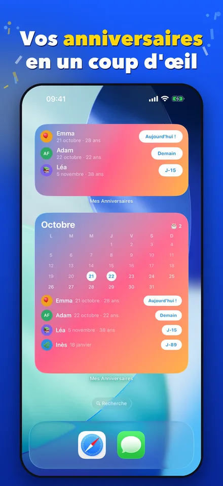
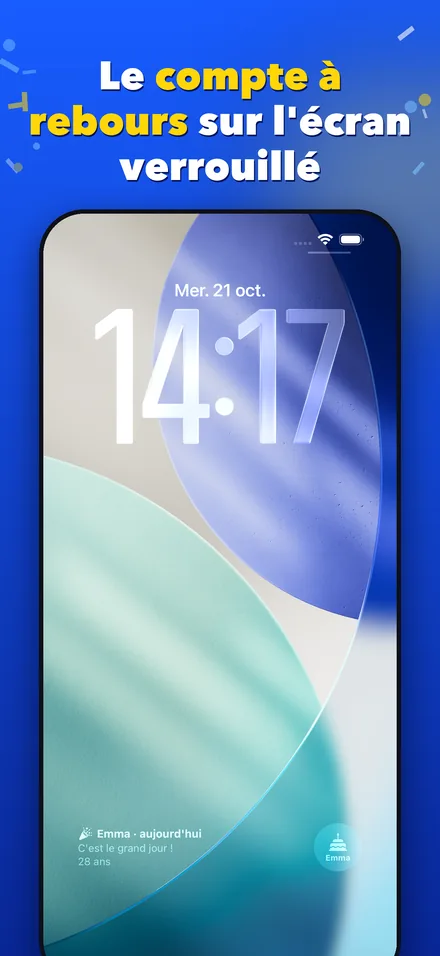
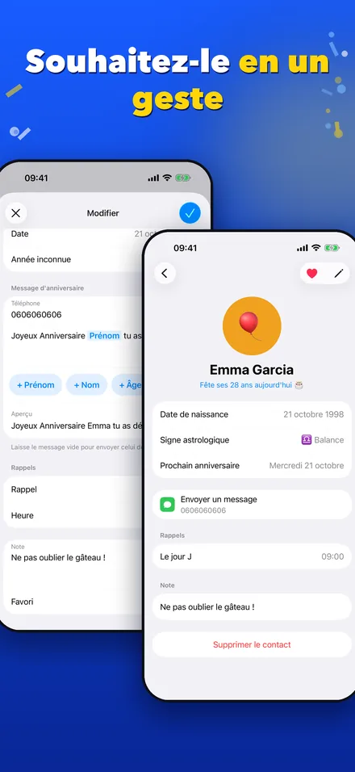
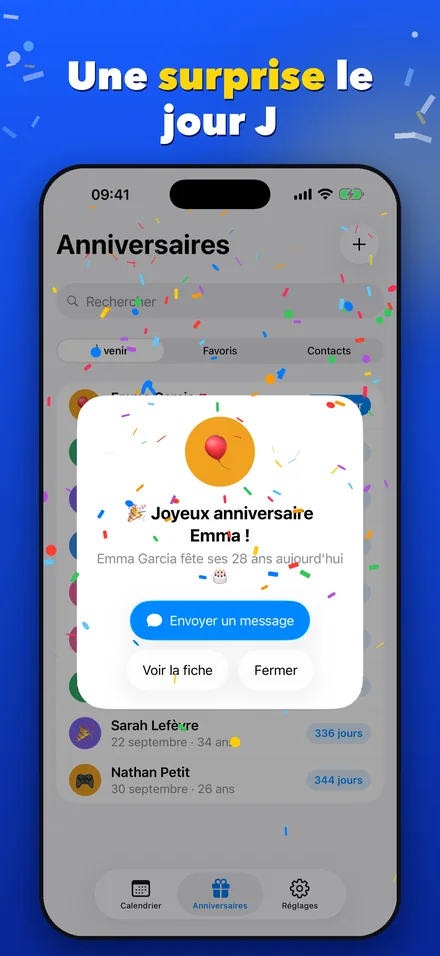
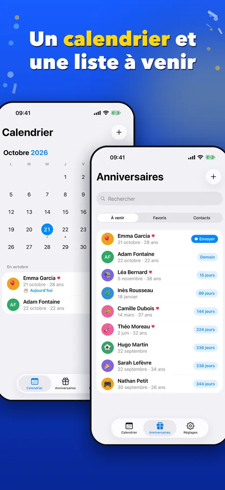

Tous les anniversaires de tes proches au même endroit
Importe les anniversaires de tes contacts ou ajoute-les à la main, puis laisse l'appli te prévenir au bon moment. Le jour J, un écran de fête t'attend et ton message de vœux est déjà prêt.
Tout reste sur ton téléphone : pas de compte, pas de publicité, pas de suivi.
L'appli en images





Tout pour souhaiter les anniversaires à temps
- Widgets : les prochains anniversaires ou le calendrier du mois sur ton écran d'accueil.
- Écran verrouillé : un compte à rebours jusqu'au prochain anniversaire.
- Rappels : une notification le jour J, à l'heure que tu choisis.
- Vœux en un geste : un message personnalisable avec le prénom et l'âge, prêt à envoyer par SMS.
- Contacts : importe et synchronise les dates d'anniversaire de ton carnet d'adresses.
- Calendrier : le mois en un coup d'œil et la liste « À venir » avec les jours restants.
- Fiches : photo, favoris, notes et idées de cadeaux ; l'âge et le signe astrologique sont calculés pour toi.
Comment ça marche
- Ajoute tes proches. Importe-les depuis tes contacts ou saisis leur date d'anniversaire.
- Reçois un rappel. L'appli te prévient le jour J et les widgets te montrent ce qui arrive.
- Envoie tes vœux. Ton message est prêt avec le prénom et l'âge : il ne reste qu'à l'envoyer.
Questions fréquentes
L'appli est-elle gratuite ?
Oui, sans publicité et sans compte à créer.
Où sont enregistrées mes données ?
Uniquement sur ton téléphone. Les noms, dates, notes et photos ne sont jamais envoyés sur un serveur.
Dois-je donner accès à mes contacts ?
Non, c'est facultatif. L'accès sert seulement à importer les dates d'anniversaire ; tu peux aussi tout saisir à la main.
Comment ajouter un widget sur iPhone ?
Appuie longuement sur un espace vide de l'écran d'accueil, touche « Modifier » puis « Ajouter un widget », et choisis Mes Anniversaires.
Nous contacter
Une question, un bug, une idée ?
Écris à labasquelucas@gmail.com